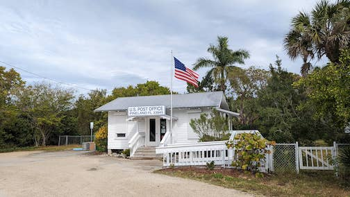
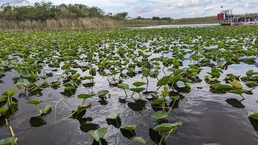
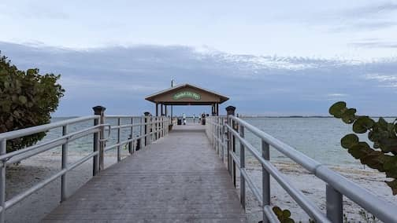
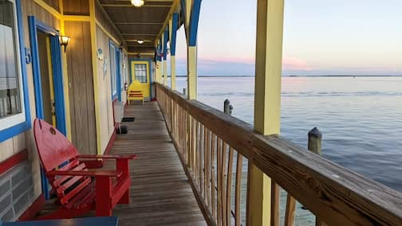

..
Florida
Feb 6 - 16, Florida.
Fun 10 day roadtrip around Southern Florida. We stayed at Miami, Matlacha, Gulf Port.
We had a great time with our friends in Miami, took a swamp tour in the Everglades, visited Sanibel Island, and swam with manatees at Crystal River.
Wynwood Walls in Miami
 Pine Island
 Swamp tour in the Everglades
 Sanibel Island
 Outside our hotel room in Matlacha